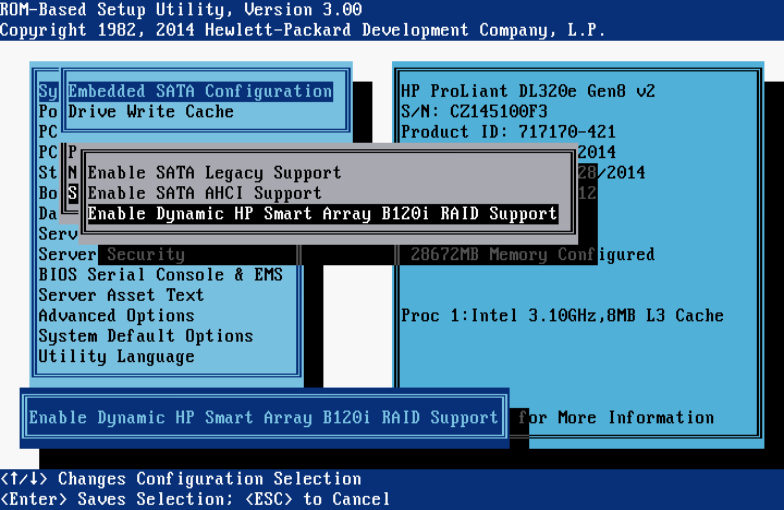

I’m making this post because I spent half a day trying to work this out and it was a pain in the arse.
My problem was that once the server was put into AHCI mode instead of using the RAID configuration, the Windows Server installer would complain that it couldn’t install to any of the disks as they were not compatible.
As you’ll see the solution turned out to be quite simple.
I tried lots of things, including but not limited to:
- Copying driver files to the installation media
- Using the BIOS option BIOS -> Advanced Options -> Advanced System ROM Options -> Virtual Install Disk to mount a virtual disk that contains most drivers for the system.
- Creating and booting from different types of media.
Info
I am writing this after the fact, so please forgive me if selection names are incorrect.
When the server is going through POST there’ll be an option for Intelligent Provisioning (F10).
- Enter Intelligent Provisioning
- Select Configure and Install
- Once on the second step (OS Selection) choose the “Windows Server” OS family.
- Choose “Manual” for the install method.
- Fill out any further required options until you get to the point of rebooting, where you must ensure that you boot to your Windows Server installation media.
Tip
If the disk that the OS will be installed on is not in bay 1 (far left) then please ensure that there are no other disks connected to the server, otherwise the System Reserved partition is sometimes put on a separate disk to the rest of the OS.
The Windows Server installer should now run fine.
I always welcome feedback on my posts, please contact me if you have any. I’m also happy to answer any related questions if I know the answer.